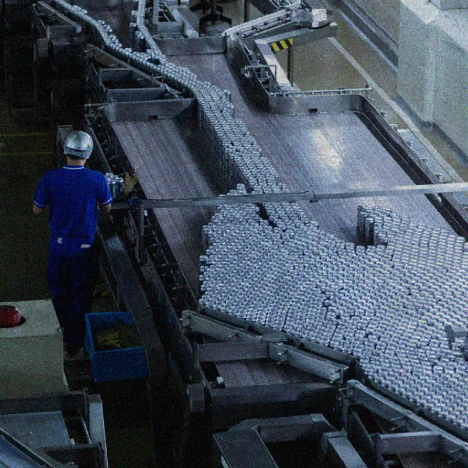

01【真相告白】あのビル・ゲイツが、「AI危険論」に転向した理由
発行日時：2026年10月14日 05:30 JST
あなたに関係ありそうな理由
AIを仕事に使う時、便利さと悪用への備えを、抽象論でなく運用・制度・人の役割に分けて考える材料になるためです。
概要
記事は、ニューヨーク・タイムズによるビル・ゲイツ氏へのインタビューをもとに、AIをめぐる危険をどう捉え直しているかを伝える。ゲイツ氏は、かつて大型コンピューターの可能性を恐れた30年前と比べ、今は自分に近い水準でコードを書けるAIが現れていると話す。問題は、技術が自律的に暴走するという一つの筋書きだけではない。サイバー攻撃や生物兵器に関わる知識が、悪意を持つ個人や組織に届きやすくなることを、より差し迫ったリスクとして挙げる。表示コメントにも、危険の中心はAIそのものより、その力を使う人間にあるという見方が多く出た。
同氏は、害が実際に起きてから訴訟で解決するやり方では遅いとして、監視と安全対策をあらかじめ法制度に組み込む必要があると主張する。例として、食品医薬品局や航空分野のように、社会に広く影響する技術を継続的に点検する仕組みを引く。AI開発企業だけに委ねるのではなく、政府が安全基準、監督、検証を持つべきだという立場である。米中の競争を、どちらか一方の勝利だけで片付けず、人類共通の安全をどう確保するかという国際的な課題として扱う点も重要だ。
一方で記事は、AIの価値を否定してはいない。医療、教育、知的労働を助ける可能性を認めながら、仕事の一部が置き換わる時に、人間が何を担い続けるのかを問う。技術ができることを増やすほど、誰が目的を定め、例外を判断し、被害が起きた時に責任を取るかは消えない。表示コメントでは、AIによって事務作業が短縮された実感と、理解や制度整備が追いつかない不安が併存していた。楽観か悲観かの二択ではなく、利用の便益と危害の経路を別々に見る必要がある。
実務で読み替えるなら、導入するAIが扱う情報、実行できる操作、誤用された場合の影響を、導入前に書き出すことが出発点になる。便利な機能を足すだけでなく、誰が使えるか、記録をどう残すか、異常時にどこで止めるかを決めておく。社会全体では、個社の対策だけで足りない領域があり、基準づくりと監督の役割が問われる。今後は、悪用を防ぐ具体策がサービスの設計や規制にどう落ちるか、そしてAIの進歩が人の仕事と教育にどのような変化をもたらすかを追いたい。
仕事や会話で使える一言
「AIの能力より先に、悪用された時の入口・監督・止め方を設計したいですね。」
NewsPicks原文を読む
02【AIで対抗】情報流出「監視の最前線」で、今起きていること
発行日時：2026年10月14日 05:30 JST
あなたに関係ありそうな理由
ウェブサービスや日常のアカウントを運用する上で、漏えい後の認証情報をどう早く見つけ、被害拡大を止めるかに直結するためです。
概要
記事は、情報漏えいが起きた後に盗まれたIDやパスワードが、攻撃の入口としてどう使われるかを追う。ジョーシスの松本恭攝CEOへの取材では、日経225企業の96％で過去3年間に何らかの情報漏えいがあり、74.6％では重要な認証情報が漏れていた可能性が示された。漏えいは発表時点で終わる出来事ではない。攻撃者は入手した認証情報を集め、環境への侵入権を売買し、別の実行者がランサムウェアなどに使う。記事は、その分業された流れを可視化し、侵入までの時間が短くなっていると説明する。
そこで焦点になるのが、ダークウェブなどに出た認証情報を、自社が使っているSaaSやIDの台帳と突き合わせる監視である。どのメールアドレス、アカウント、サービスが漏れた可能性を持つかを把握できなければ、パスワード変更や無効化の優先順位もつけにくい。記事は、AIが攻撃側の作業を速めている可能性に触れる一方、防御側も大量の漏えい情報の照合や対処の補助にAIを使う状況を描く。問題は「AIで対抗する」ことだけでなく、見つけた警告を誰が判断し、どの範囲を止めるかにある。
基本策として記事は、多要素認証の設定、漏えいが疑われる認証情報の失効・変更、端末が感染した可能性がある場合の再整備を挙げる。さらに、退職者のアカウント、使われていないSaaS、過大な権限を持つIDが残っていないかを点検する必要がある。表示コメントでも、多要素認証の有効性には共感が集まる一方、警告だけで自動停止すれば誤検知や業務停止が起こり得るという指摘があった。検知の精度と、業務を継続するための復旧手順を、同時に考える必要がある。
個人でも、使い回しているパスワードを減らし、重要なアカウントから多要素認証を有効にすることが入口になる。組織では、漏えいの発見から本人確認、権限停止、再発行、利用者への連絡までを、緊急時に動ける順序で決めておきたい。台帳と実際の利用状況がずれていれば、監視サービスを入れても判断を誤る。対策担当だけに判断を集めず、利用部門と復旧基準を普段から共有することも欠かせない。今後は、漏えいをゼロにできるかだけでなく、発見から何分・何時間で権限を閉じ、どの業務を代替できるかという復旧力を見ていきたい。
仕事や会話で使える一言
「漏えいを見つけた後、どのIDを誰が何分で止めるかまで決めておきたいですね。」
NewsPicks原文を読む
03【アサヒ飲料社長】サイバー攻撃、復旧の舞台裏を語る
発行日時：2026年10月14日 05:30 JST

あなたに関係ありそうな理由
基幹システムが止まった時、バックアップだけでなく、受注・物流・顧客対応をどう代替して復旧するかを考える実例になるためです。
概要
記事は、アサヒ飲料が受けたサイバー攻撃から、供給と業務をどう復旧させたかを、近藤社長への取材で振り返る。2025年9月に起きた攻撃では、約11万5千件の個人情報が漏えいし、システムと物流が止まったとされる。異変を認識した当日にパソコンを閉じ、取締役会と物流部門が即日で対応に入った。被害額は400億円とされ、停止は単に社内システムの問題にとどまらず、受注、出荷、店頭の商品供給へ広がった。復旧の過程を具体的に語る点に、この取材の価値がある。
最初の二日間は受注や出荷が大きく制限され、その後はオフラインのExcel、電話、FAXを使う暫定手段で注文を受けた。完全ではないものの、四日後には一部の出荷を再開できたという。物流の調整会議は約二カ月にわたり一日二回行われ、電子受注の再開は12月ごろ、物流が通常水準に戻ったのは2026年2月だった。デジタル化が進んだ組織でも、非常時に現場が何を手作業で回せるか、連絡網と判断経路をどこまで残しているかが、復旧の速度を左右することが分かる。
記事が示す教訓は三つある。第一は、復元できるバックアップを持つこと。第二は、侵入を前提に異常を検知し、被害範囲を小さくするゼロトラストの考え方。第三は、従業員が許可されていないAIやサービスを使わず、日常から安全を自分事として扱うことだ。表示コメントでは、バックアップをどこまで持つかは費用と効率の問題にもなるが、危機が起きてから削った余白を取り戻すのは難しいという論点があった。制度や製品だけでなく、経験のある人の判断や現場の連携が復旧を支えた。
事業面では、復旧後も飲料の販売数量が前年同期比で約15％減ったとされ、棚を別商品が占めた後の回復の難しさも語られる。同社は将来型ラテや泡抹茶のような付加価値商品へ軸足を移す考えだ。停止からの復旧は、元に戻すだけでは終わらない。顧客や取引先の行動が変わった後に、どう選ばれ直すかまで含めて考える必要がある。復旧の見通しと利用者への説明を同じ速度で更新できるかも、信頼回復を左右する。今後は、同社がバックアップ、監視、業務の代替手段をどこまで仕組みに変え、供給と商品構成をどう立て直すかを見たい。
仕事や会話で使える一言
「復旧計画はバックアップだけでなく、止まった日に受注と連絡をどう回すかまで必要ですね。」
NewsPicks原文を読む
04【急拡大】霞ヶ関キャピタル「ホテル量産」の秘訣
発行日時：2026年10月14日 05:30 JST
あなたに関係ありそうな理由
不動産を保有し続けずに開発・運営・出口を組み合わせる事業モデルと、宿泊体験の両方を考える材料になるためです。
概要
記事は、霞ヶ関キャピタルがホテルを急拡大できる理由を、開発と資金の回し方から解説する。現時点で22施設を運営し、海外を含めて72施設を計画、31都道府県へ広げるという。同社は建物を長く貸借対照表に抱えるのではなく、土地とホテルを企画した後に土地を投資家へ売却し、プロジェクトマネジメントの収益を得る。出口にはホテルREITも使う。開発、売却、運営を分けて回すことで、資金を次の案件へ回しやすくする仕組みであり、単に大量に建てる話ではない。
現場の意思決定も、拡大を支える要素として紹介される。従業員と経営陣が毎週同じテーブルで案件を判断し、投資の遅れを小さくする。ブランドは家族やグループ向けの「fav」と「seven x seven」を軸に、主要都市の一等地ではなく、1.5等地も含めて立地を選ぶ。チェックインをQR化し、地元の事業者にフランチャイズで運営を委ねながら、ブランド、集客、システムは中央で持つ。記事によると、favは稼働率20％でも黒字化できる構造を目指し、固定費を抑える設計をとる。
改装にも機会を見いだす。名古屋の古いビジネスホテルを例に、1泊6千〜7千円だった客室単価を1万2千円へ上げた取り組みを挙げ、建設費が上がる中で中価格帯の宿泊需要を取り込む狙いを説明する。新築だけでなく既存ストックをどう再生し、誰にどんな滞在価値を出すかが重要になる。表示コメントでは、建設費だけでなく投資回収まで含めた事業設計を評価する声がある一方、人手を減らした運営で実際の宿泊体験が成り立つかを問う声もあった。
ホテルの収益性は、仕入れと稼働の数字だけで決まらない。予約、案内、食事、トラブル対応まで、利用者が不便を感じずに過ごせるかが再訪につながる。規模を速く増やすほど、ブランドの約束を各施設で再現できるかが問われる。数字が良くても現地の声を拾えなければ、長期の稼働には結びつきにくい。記事からは、保有リスクを抑える金融設計、運営を標準化する仕組み、改装で需要に合わせる企画が一体になっていることが読み取れる。今後は、計画施設の開業と稼働、フランチャイズ先の品質管理、投資家と利用者の双方にとって持続するモデルかを追いたい。
仕事や会話で使える一言
「不動産は建てる費用だけでなく、出口・運営品質・再訪までを一つの事業として見たいですね。」
NewsPicks原文を読む
05関係人口を増やすには…人口2300人の“島根の離島”がいまも最先端の理由
発行日時：2026年10月14日 11:00 JST
あなたに関係ありそうな理由
地域や事業に関わる人を、移住者数や一時的な来訪者数だけで測らず、継続した信頼関係として育てる視点を得られるためです。
概要
記事は、島根県海士町が「関係人口」をどう育ててきたかを取り上げる。中之島にある人口約2,300人の町で、関係人口とは、住民でも観光客でもないが、地域と継続して関わる人を指す。記事は、約16年前に始まった高校の魅力化と大人の島留学を背景に、住む・訪れるの二択にしない参加の形をつくってきた経緯を紹介する。少子高齢化の地域で、外から来た人を単なる消費者や数字として扱わず、顔の見える関係にできるかが中心の問いになる。
新しい取り組みとして、遠方の人にもデジタル名刺やオフラインのイベントを通じて仕事や発信に関わってもらう「アンバサダー」制度がある。2024年の開始後、登録者は約500人となり、2030年には2,500人を目標にする。記事は、人数を増やすだけでなく、何に関わり、誰とつながったかを大切にする。人口18人の多井地区では、10人のボランティアが神社や海岸を掃除し、祭りに加わり、耕作放棄地を耕す実験も行われた。小さな関わりを、次の訪問や役割につなげる設計である。
成果として、町の人口は減少が鈍化した後に2025年には増加へ転じ、大人の島留学は2020年の21人から2025年に239人へ増え、2026年は282人の応募があったとされる。ただし、これらの数字だけを成功の証明にしてはいない。記事が繰り返すのは、アプリやKPIですべてを管理するより、互いの名前や事情が分かる関係を積み重ねることだ。関係人口を制度として広げる時ほど、参加者を単なる作業力や広告の担い手にしないことが大切になる。
地域づくりに限らず、顧客、協力者、卒業生、取引先との関係にも応用できる。参加の入り口を広くしても、次に何ができるかが見えなければ、関わりは一度きりになる。小さな役割、直接会う機会、結果を共有する場を用意し、任せる範囲を徐々に広げることが継続につながる。役割を持った関わりが次の参加を呼ぶ循環を、どう保てるかも大切になる。離れた場所にいる人にも、参加後の手応えを返す工夫が必要になる。記事は、人口や登録数のような指標と、人の信頼を混同しない姿勢を示す。今後は、アンバサダーが町の仕事や地区の活動へどう根づくか、目標人数と参加の質をどう両立させるかを見ていきたい。
仕事や会話で使える一言
「人数を集めるだけでなく、次に誰と何を担える関係かを育てたいですね。」
NewsPicks原文を読む